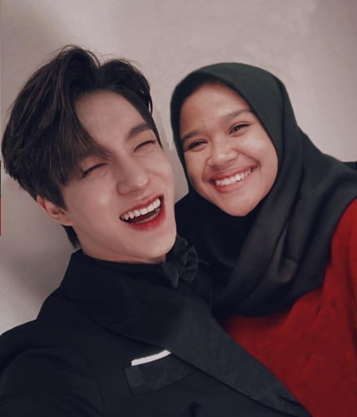

Nama Panggilan : May, Mayla, Mela, Mamay (Panggilan kecil )
TTL : Bekasi, 20 Agustus 2003
Alamat : Perum. Gramapuri Persada Jl. Orchid 1 Blok O5 NO 11 RT/RW 01/12 Desa Sukajaya, Kec. Cibitung
Jenis Kelamin: Perempuan
Status : Pelajar
Agama : Islam
Kewarganegaraan : Indonesia
Email : Maylavanya20@gmail.com
Instagram : Maylaamalia
Hobi : Menari, menonton film/drama
Makanan Favorit : masakan mimih
Minuman Favorit : Farm pulpy aloe vera drink
Cita-cita : sukses setelah 4 tahun di smakbo

Nama saya Maylavanya Amalia Rakhmat, biasa dipanggil Mela kalau di SMAKBO. Nama saya diambil dari pemain biola, Maylaffayza tapi saya gabisa main biola hehe. Saya lahir di Bekasi tapi besarnya di Cikarang. Di Bogor, saya tinggal sendiri atau nge-kos di Kos Pak Eko di gang haji Thamim. Saya suka menari, saat SD saya aktif di tari tradisional. Namun saat SMP, saya beralih ke tari modern, saya pernah mewakili sekolah untuk tampil di Bekasi Pekan Raya Bekasi dan berhasil mendapat piala sebagai penampil terbaik. Di SMAKBO saya banyak bertemu orang-orang hebat, termasuk teman- teman terdekat saya. Saya seorang K-POPERS, maka dari itu tugas pada edit foto saya adalah bersama salah satu boygrup. Sedangkan pada foto ini adalah Jeno, salah satu member NCT. Saya meng-fangirl ketika saya merasa stress atau penat karena tugas atau apapun yang membuat saya capek (hehe) maka dari itu KPOP adalah pelampiasan saya. Saya juga pengkoleksi drama dan film, dan mungkin saya bisa memberikan rekomendasi film atau drama yang bagus untuk di tonton.